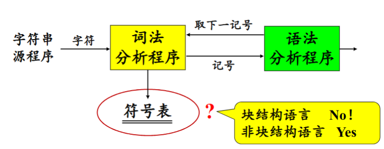
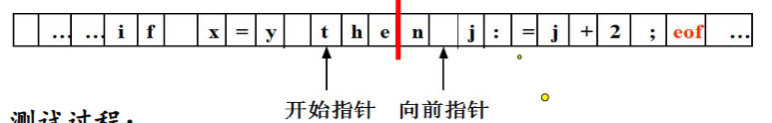
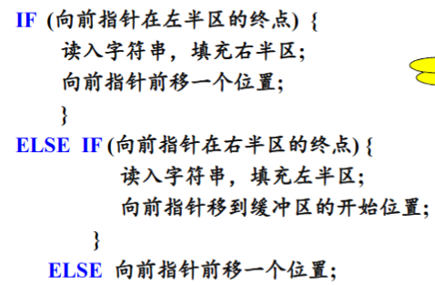
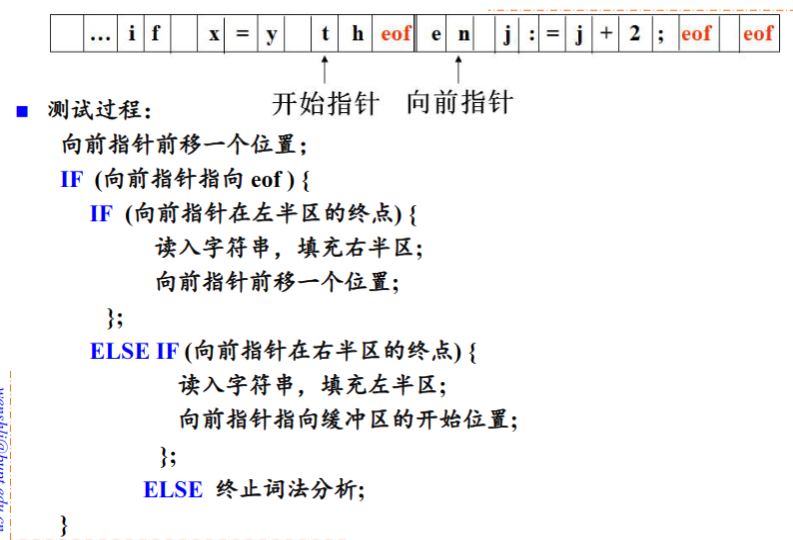
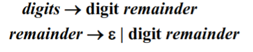
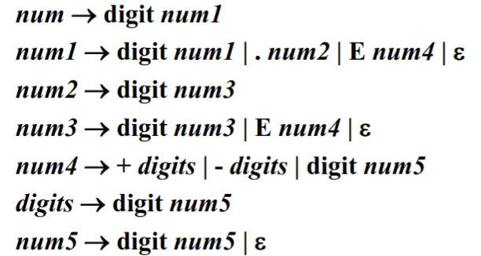

词法分析
词法分析任务由词法分析程序完成。
词法分析程序的作用
词法分析程序扫描源程序的字符流，按照源语言的词法规则识别出各类单词符号，产生用于语法分析的记号序列。
- 词法检查
- 同用户接口的一些任务：
- 跳过源程序中的注释和空白
- 把错误信息和源程序联系起来
- 创建符号表
词法分析程序和语法分析程序的关系
存在三种关系：
-
词法分析程序作为独立的一遍

输出放到一个中间文件中，可以时磁盘文件/内存文件。
-
词法分析程序作为语法分析程序的子程序

这种关系避免了中间文件，省去了取送符号的工作，有利于条编译程序的效率。
是否在词法分析阶段生成符号表由源程序是否由块结构语言决定。块结构语言是变量含有作用域的语言，而非块结构语言是变量没有作用域的语言。
-
词法分析程序与语法分析程序作为协同程序
词法分词程序与语法分析程序在同一遍中工作，以生产者和消费者的关系同步运行。
在上述三种关系中，词法分析程序都是作为一个单独的程序存在，这样的好处为：
- 简化设计
- 改进编译程序的效率
- 加强编译程序的可移植性
源程序的输入与词法分析程序的输出
词法分析程序的实现方法
-
利用词法分析程序自动生成器
从基于正规表达式的规范说明自动生成词法分析程序
生成器提供用于源程序字符流读入和缓冲的若干子程序
-
利用系统程序设计语言来编写
-
利用汇编语言编写
缓冲区
为了得到某一个单词符号的确切性质，需要超前扫面若干个字符。
把一个缓冲区分为大小相同的两半，每半各含N个字符，这被称为缓冲区配对。

使用配对缓冲区的意义是为了避免在缓冲区的结束处读取到不完成的单词。测试的过程如下的伪代码所示：

我们还可以在每半个缓冲区的最后添加结束标记来提高测试的效率：

词法分析程序的输出
记号、模式和单词
记号是某一类单词符号的类别编码。如标识符的记号为id，常数的记号是num。
模式是某一类单词符号的构词规则。如标识符的模式是“由字母开头的字母数字串”。
单词是某一类单词符号的一个特例。
记号的属性
词法分析程序在识别出一个记号后，要将与之有关的信息作为属性保存下来。
记号影响语法分析的决策，属性影响记号的翻译。
在词法分析阶段，对一个记号只能确定一种属性。
- 标识符：单词在符号表中的入口指针
- 常数：表示的值
- 关键词：一符一种/一类一种
- 运算符：一符一种/一类一种
- 分界符：一符一种/一类一种
由于关键词、运算符和分节符，由于确定的编程语言只能有有限的关键词、与运算符和分界符，因此可以使用一符一种。
例：total := total * rate * 4的词法分析结果
- 标识符，指向标识符total`在符号表中的入口指针
- 赋值运算符，
- 标识符，指向标识符
total在符号表的入口指针 - 加法运算符，
- 标识符，指向标识符
rate在符号表中的入口指针 - 乘法运算符，
- 常数，整数值4
输出实际上就是一个
<记号，属性>的二元组。
单词符号的描述及识别
识别单词是按照记号的模式进行的，一种种记号的模型匹配一类单词的集合。
正规表达式和正规文法是描述模式的重要工具。
词法：描述语言的标识符、常数、运算法和标点符号等记号的文法，使用正规文法。
语法：借助于记号来描述语言的结构的文法，使用上下文无关的文法。
记号的文法
标识符
假设标识符定义为“由字母开头的，由字母或数字组成的符号串”。
则描述标识符集合的正规表达式为： $$ \rm{letter(letter|digit) ^*} $$ 转换为正规文法： $$ id \to {\rm letter}\ rid $$
$$ rid \to \epsilon | {\rm letter}\ rid | {\rm digit}\ rid $$
常数
-
整数 $$ （digit)^+ $$ 转换为正规文法：

-
无符号数 $$ \rm (digit)^+(.(digit)^+)?(E(+|-)?(digit)^+)? $$ 转换为正规文法：

-
运算符 $$ \rm <|<=|=|<>|>=|> $$

状态转换图与记号的识别
状态转换图是一张有限的方向图。
由上文中无符号数的右线性文法可以画出状态转换图：

词法分析程序的设计与实现
就是写一个程序。
文法和状态转换图
首先根据语言的说明写出记号的正规文法、画出状态转换图。